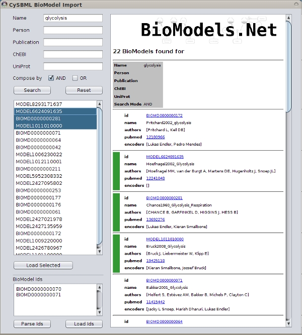
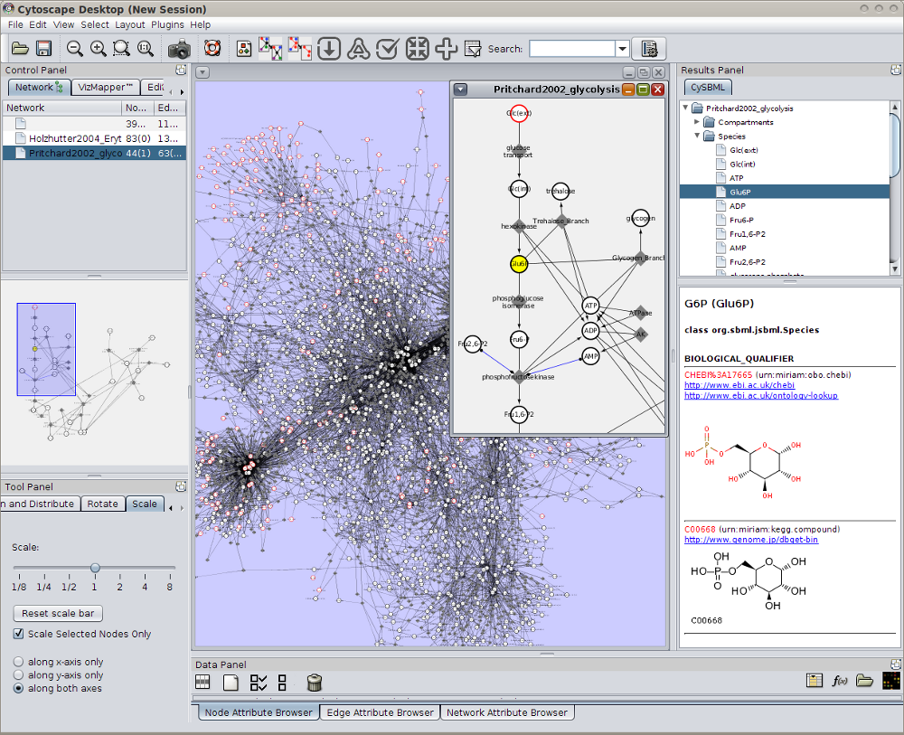
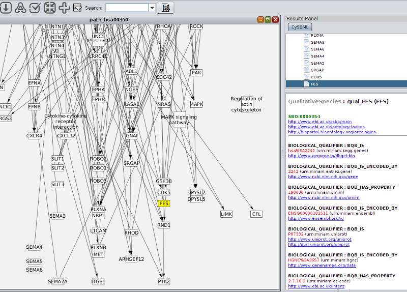

CySBML Tutorial
CySBML TutorialIntroduction
We are pleased to announce the release of CySBML available for download from http://sourceforge.net/projects/cysbml/.
CySBML is a Cytoscape plugin for the import and work with SBML files in Cytoscape providing the visualisation of SBML annotations within the network context. The main features are
- Java based SBML parser for Cytoscape based on the java SBML library JSBML
- simple access to SBML models and SBML annotations via BioModel and MIRIAM WebServices
- supports all versions of SBML
- support of SBML Layout Package
- support of SBML Qualitative Models Package
- provides SBML validation (SBML warnings and errors accessible)
- creates standard network layout based on the SBML species/reaction model
- provides access to RDF based annotation information within the network context
- Navigation menu based on the SBML structure linked to layout and annotation information
- succesfully tested with all SBML.org and Biomodels.org test cases (sbml-test-cases-2.0.2, BioModels_Database-r21-sbml_files)
The CySBML tutorial covers the following topics
- Installation
- CySBML interface
- Import of SBML models
- Access to annotation information
- SBML validation in CySBML
- Programmatic Interaction with CySBML
Please try and report any problems you encounter using CySBML to matthias.koenig[AT]charite.de
Publications originating from the use of CySBML should cite the the following publication
|
Matthias König, Andreas Dräger and Hermann-Georg Holzhütter CySBML: a Cytoscape plugin for SBML Bioinformatics. 2012 Jul 5. [PubMed] |
Thanks and have fun The CySBML team.
CySBML was developed by Matthias König in cooperation with Andreas Dräger from the Center of Bioinformatics Tuebingen (ZBIT) and was funded by the Virtual Liver Network.
We thank Camille Laibe for implementing additional BioModel WebService functionality, the Qual Team and Finja Büchel, Florian Mittag, and Nicolas Rodriguez (Qual implementation in JSBML), Sebastian Fröhlich and Clemens Wrzodek (Layout support in JSBML) as well as Sonia Villegas, Michael Weidlich and Christian Bölling for testing CySBML.
Installation
[top]Cytoscape 2.8.2 or later has to be installed prior to the plugin installation.
[1] Download the latest CySBML version at http://sourceforge.net/projects/cysbml/.
[2] Move the CySBML-vX.XX.jar into the Cytoscape plugin directory located in the Cytoscape installation directory under plugins
$CYTO_INSTALL/plugins/.
On Windows Systems Program Files/Cytoscape_v2.8.2/plugins/ on Mac
/Applications/Cytoscape_v2.8.2/plugins.
[3] Remove the sbml-reader-2.8.2-jar-with-dependencies.jar from the plugin folder.
The plugin is loaded and installed during the next Cytoscape startup. To update to current CySBML version replace the old version of cySBML-vX.XX.jar with the new version, to uninstall remove the cySBML-vX.XX.jar from the plugin folder.
Usage guide
[top]CySBML Menu Bar
The main functionality of cySBML is accesible via the Cytoscape menu bar in the top region of the Cytoscape window

 |
SBML Import | Load SBML files via the File Import Dialog. To import multiple files select multiple files. |
 |
BioModel Import | SBML files from BioModels are loaded via the BioModel Import Dialog. |
 |
SBML Validation | Imported SBML files can be validated. Select the SBML network to validate and click the validation icon. |
 |
Hide/Show cySBML Panel | Changes the visibility of the cySBML Panel for better overview. Initially the CySBML Navigation Panel is hidden and only opened after loading of SBML models. |
 |
Help | cySBML tutorial and help system. |
BioModel Import
BioModels can be searched via name, person, publication (abstract or pubmed id),
ChEBI (id or name) and UniProt (id or name). The selected models form the result list can than be imported.
To load, for instance, all models related to the name glycolysis search
by name "glycolysis" select all found models and click "Load Selected". Information for the search results is displayed,
selected models are marked in green.
Alternatively models can be imported based on given BioModel identifiers or text containing BioModel identifiers.

Integration with Cytoscape and Other Plugins
CySBML integrates seamlessly with the Cytoscape ecosystem consisting of the Cytoscape core and plugins. Many plugins work out of the box with Cytoscape, thereby providing additional functionality for SBML files. For instance NetworkAnalyzer to calculate topological parameters of the models, NetMatch to find network motifs within SBML models or FluxViz to visualize flux distributions in SBML models.
CySBML provides the SBML information as Cytoscape node and edge attributes under well defined names given in the CySBMLConstants class. For in detailed information of interaction with CySBML see the tutorial example.

SBML Annotations
MIRIAM and SBO annotations are accessible via the CySBML Navigation Panel in the Cytoscape Results Panel. Annotation information is loaded on the fly for selected nodes in the network, like in the example the information for glucose-6 phosphate for the BioModel of Pritchard2002. Crosslinks to additional resources are opened in the browser.

Support of Layout and Qualitative Models Package
CySBML supports the SBML Level 3 packages for qualitative Models and Layouts. Layout information from the layout extension is used to set the positions and boundary boxes of the nodes. Furthermore, SBML qualitative models can be imported with their annotations and thereby allows for models where species do not represent quantity of matter and processes are not reactions per se like, for instance, Boolean nets.

SBML Validation
SBML models can be validated from within Cytoscape.
Validation errors can be filtered by the severity of the error falling in the classes INFO, WARNING, ERROR, FATAL and ALL.

FAQ
[top]During installation, it is required to delete the file: sbml-reader-2.8.2-jar-with-dependencies.jar. Please clarify why this is needed and if this is another plugin that needs to be removed then this could be a potential conflict?
No conflicts arise after the SBMLReader is removed because CySBML provides the complete subset of
SBML parsed by SBMLReader under identical node and edge attribute names. All plugins relying in any
way on SBMLReader have access to the identical information in CySBML.
The issue with removing SBMLReader is due to problems with how Cytoscape registers CyFilters and
FileReaders for given file types and how plugins are loaded in Cytoscape.
Currently, no methods are available in Cytoscape to unregister instances of CyFilters after these have
once been registered for given file types, with the first filter registering for a file type being permanently
associated. In the case of SBMLReader and CySBML (both registering for SBML), the plugin loaded first
during Cytoscape startup is associated permanently with SBML. The loading order of plugins depends on
a multitude of variables and cannot be guaranteed (for example, core plugins are treated differently than
other plugins, plugins given as parameters at startup are treated differently than plugins in the Cytoscape
plugin folder, naming of the plugins influences the loading order, ...). Due to the missing methods to
unregister the SBMLReader CyFilter for SBML files in Cytoscape the only option to guarantee CySBML
is associated with SBML is to remove the SBMLReader plugin which than does not register its CyFilter.
Like mentioned above, no conflicts arise and the complete functionality of SBMLReader is available in
CySBML.
Additional Resources
[top]Referenced Jar files
JSBML http://sbml.org/Software/JSBML http://sourceforge.net/projects/jsbml/files/jsbml/
BioModel http://www.biomodels.org/ http://sourceforge.net/projects/biomodels/files/biomodels-wslib/
MIRIAM http://www.ebi.ac.uk/miriam/main/ http://sourceforge.net/projects/miriam/files/Miriam%20Java%20Library/1.1.4/